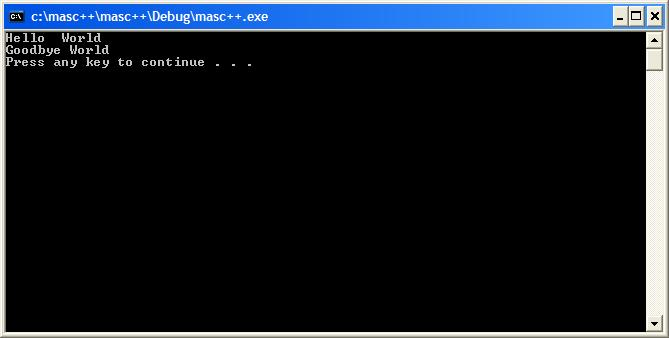

Intro to MasC++ by Jared Bruni (jaredbruni@gmail.com)
MasC++ is a cross platform object oriented scripting language. Its instruction set is based off Assembly Language/C++/ and Pascal. However it dosent support complex expressions, but instead series of instructions, and streams. What can MasC++ be used for? Well its compatible with apache as cgi for windows and linux. You can recompile the source with your own function "callbacks" which can inturn call MasC++ procedures. So basicly you can mix C++ and MasC++ to script up applications for the web, or write your own custom applications (games, windows appz, etc..). MasC++ has a default standard library which handles FILE I/O , Windows Application Programming and more. Its is in very alpha stages so the standard library at this time is very minimal. But soon it will be expanded. What are the standard library names? So far I have written console.msrc, file.msrc, and windows.msrc. You can include them into your application with the insert keyword (preproccescor directive) and they will be included into your app. MasC++ (finally) has a syntax anaylizer will print out errors and the line that they appear on. I tried to think of every possible error I could come up with but there still might be some that will not be caught and will cause a runtime error. By Runtime error I mean a invalid instruction or the like will be called and the program will printout a debug error message preceeded by **** to let you know theres something wrong. Thanks to Dustin Bowers for helping me test the syntax anaylizer and catching alot of the problems there was initially with it. What dosent the language support? As of right now it dosent support instantion of objects only inhertiance of the objects from the "master" object. Instantion will come in version 2.02. Also does not support multi-dimensional arrays or vectors. This is also a feature I am working on implementing. I am also thinking bout including a expression parser for simplicity sake so people who are used to using complex expressions rather than instruction statements can do so. These are all things I am working on and will come in time. I have spent quite a long time working on this application and from the ashes of my brain have created 4 versions from scratch. Each time adding more features and improving the language. So what does the language support the following is a list of its features:
Full Compatiblity with C++ with No C style casts, heavy use of STL
The ability to call MasC++ procedures from C++ code
The ability to call C++ functions from MasC++ code
A Symbol Table with easy access to variables via the [] operator for passing information to and from the code.
A Stack to pass variables to and from procedures
Instructions with one operand
Instructions with two operands
Instructions with stream operators
Mas Object code blocks which can contain virtual functions implement keyword and also external C++ functions extern keyword. Mas Objects have constructors/destructors which are called via the uses block in the master object. A constructor is defined by a begin statement followed by a block. Same for destructor except its a end statement followed by a block. Has a var block which contains the objects variables. Variable names are used by the name of the object proceded with the . operatorVariable declerations are the following: var& name; (for integer type) var# floatname; (for floating point type) var$ stringname; (for string type) variable declerations can have a inital value for the variable by using the = operator. So you could say var$ str = "";
master Object code block. The "master" object is the main object of the program its begin {} block is called when the program begins execution. And its end block is called when the programs execution terminates. It also contains a uses{} block for inhertiance and multiple inhertiance of other objects with virtual functions & procedures.
comments are
statement;// this is a comment
A following is a example of a simple program using the MasC++ standard library
#insert "console.msrc";
master MyProg {
uses {console;}
var { var$ str = "Hello "; }
begin {
print << master.str << " World\n";
}
end {
print << "Goodbye World\n";
call console.pause;
}
}
The following program will give this output in windows:

You may notice the variable name is master.str this is because the variable str belongs to the master object and can be called from any other object that the master object inherts. So say in the console mas object wants to use the master objects variable but dosent know what the master object looks like. It can do so by using the master keyword preceded with a . operator.
That concludes this section of the documentation.
- Jared Bruni =)
Next Step